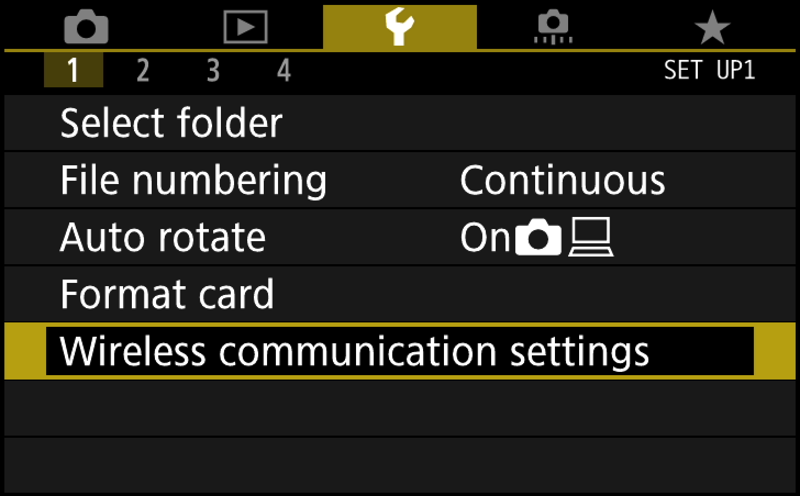
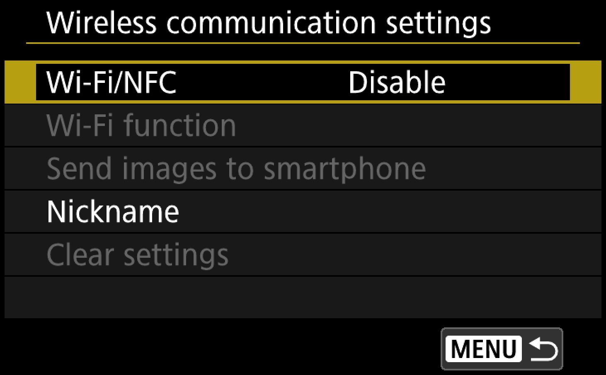
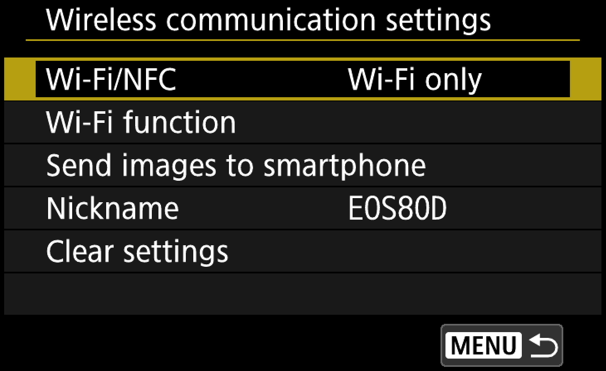
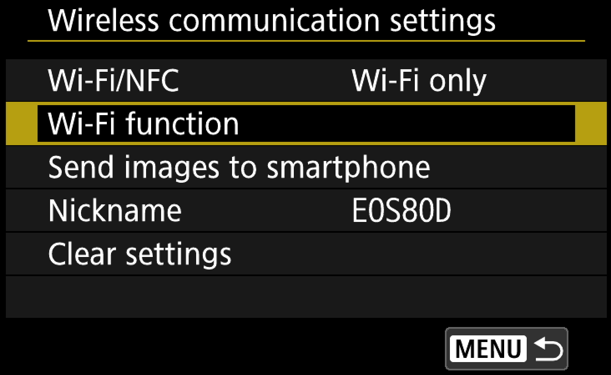
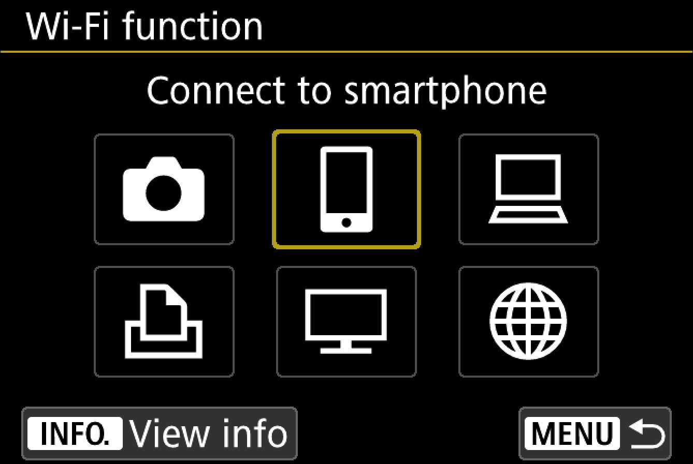
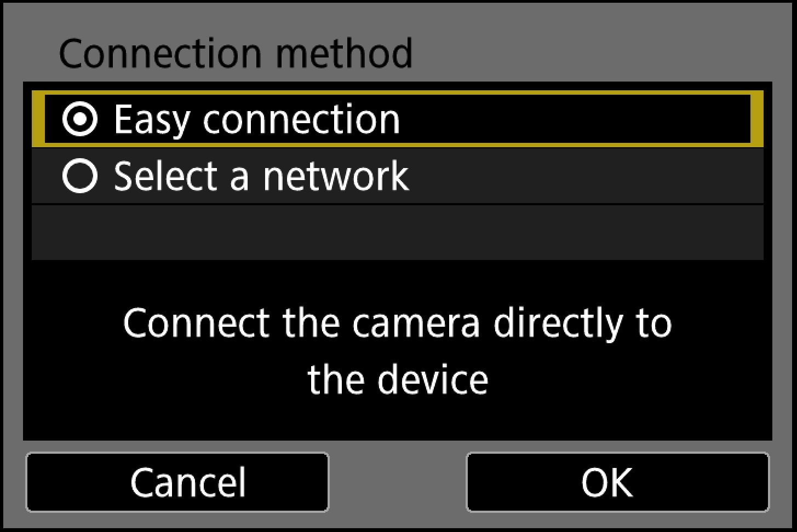
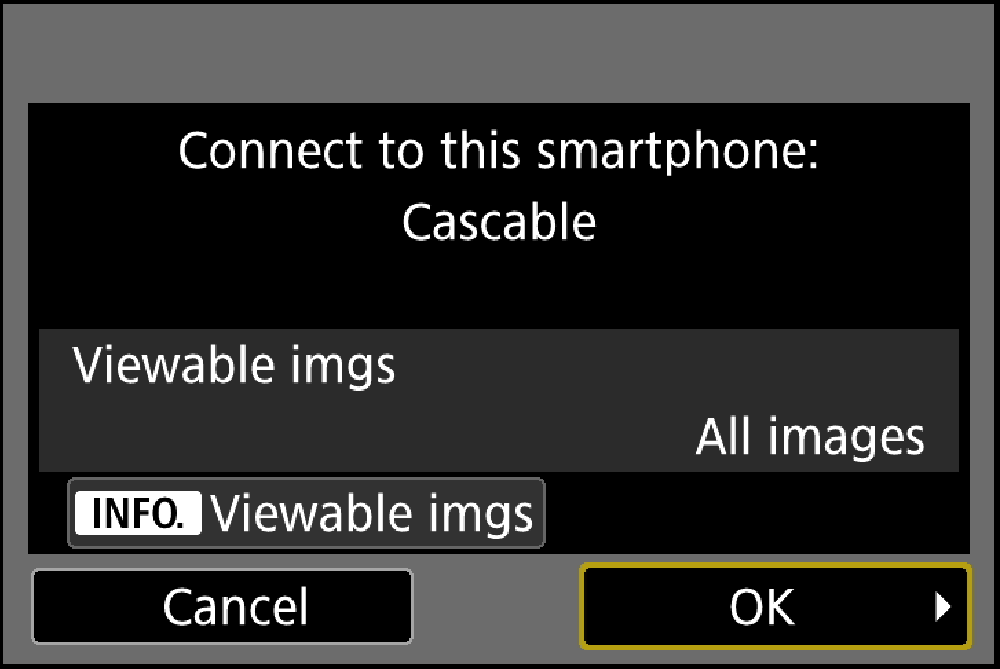
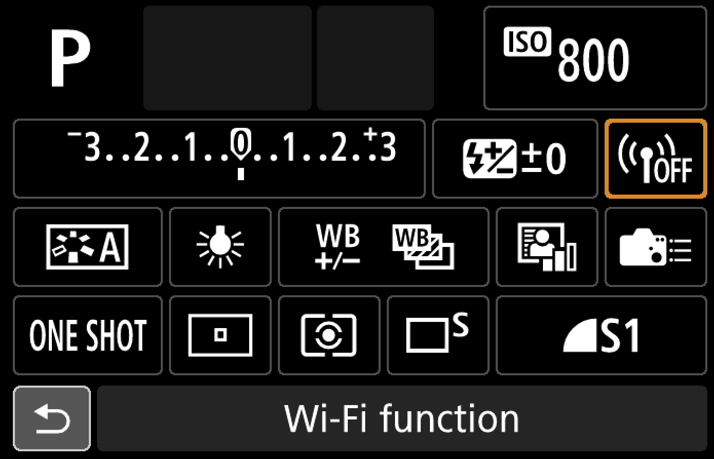

Before We Start
- Make sure your camera is supported by Cascable.
- Check that your camera’s firmware is up-to-date.
- Check that Cascable is up-to-date.
Connecting Cascable to Your WiFi-Enabled Camera
- Press the Menu button on your camera and navigate to Wireless communication settings in theSetup Menu.

- Make sure the Wi-Fi/NFC setting is set to Enabled. You do not need NFC enabled here, just Wi-Fi for use with Cascable.


- Follow the prompts through to set up a Nickname for your device.
- Now select the next option down in the Wireless communication settings menu called Wi-Fi Function.

- To use Cascable for iOS, select the Connect to smartphone option here.

- The camera will now guide you through the connection settings to connect to your iOS device. Select Easy Connection.

- On your iOS device, open Settings and navigate to Wi-Fi, then select the WiFi network and enter the password that's displayed on your camera's screen.
- Launch Cascable on your iOS device. It should automatically detect and connect to your camera. If not, tap the Connection Indicator
at the top of the screen, then tap Connect next to the name of your camera.
- For the first connection, your camera needs to be paired with the connecting app. If this is the case, Cascable will show this dialog:
- To continue, look at your camera and press OK to confirm the pairing request from Cascable.

- That’s it — you’re connected!
For future Wi-Fi connections, simply select the Wi-Fi option from the Q menu on the main screen. You will be prompted to choose a smartphone connection and given Wi-Fi password information as from step 7 above.

Basic Troubleshooting
If you’re having trouble getting Cascable connected to your camera, follow these steps:
- Make sure there are no other “competing” applications running on your network, such as Canon’s EOS Utility.
- Turn your camera off, wait a few seconds, then switch it back on again.
- Make sure your camera and iOS device are connected to the same network, or that your iOS device is connected to the camera’s own WiFi network.
Advanced Troubleshooting
If you’re still having trouble getting Cascable connected to your camera, or Cascable can see your camera but has intermittent trouble connecting to it, try the following.
Third-party software can conflict with Cascable by automatically connecting to nearby cameras. Typically, when this happens Cascable will be able to see the camera but will hang when trying to connect to it. In particular:
- Canon EOS Utility will attempt to automatically connect to your camera if the icon is present on your Mac’s menu bar or PC’s task tray. Click the icon and choose Quit to exit the program.
- Adobe Lightroom will attempt to automatically connect to your camera. To stop it, choose Plug-in Manager… from Lightroom’s File menu and disable the Canon Tether Plugin.
Still Stuck?
If you’re still stuck, head over to the Cascable Website and we’ll help you out.